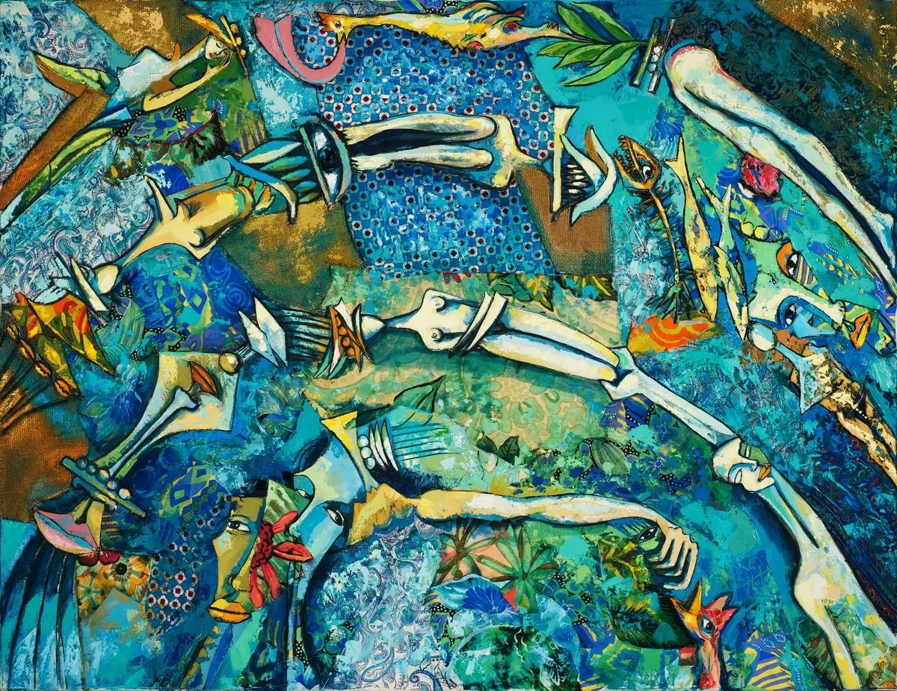
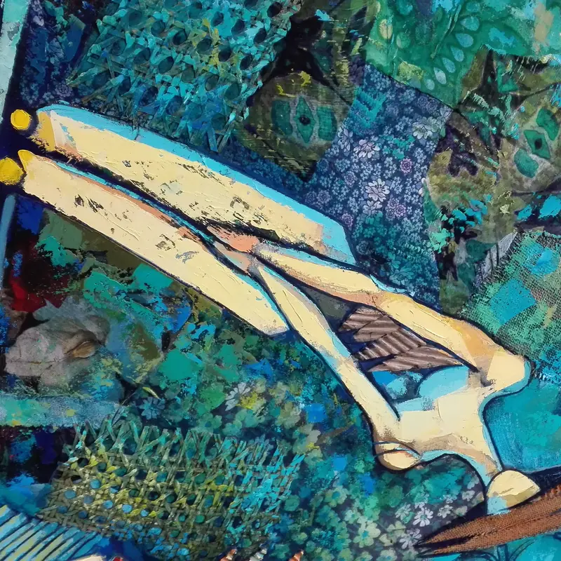

Ripples in the Water
Ringar i vatn- Teknikk
- Maleri
- Mål (høyde × bredde)
- 120 × 150 cm
Ripples in the Water: et bilde av den kubansk-norske maleren Ramón Eduardo Haití Filiu.
Spør om dette verket
Ripples in the Water: et bilde av den kubansk-norske maleren Ramón Eduardo Haití Filiu.
Spør om dette verketDetaljEt fotografi av en detalj i bildet, tatt av kunstneren.
